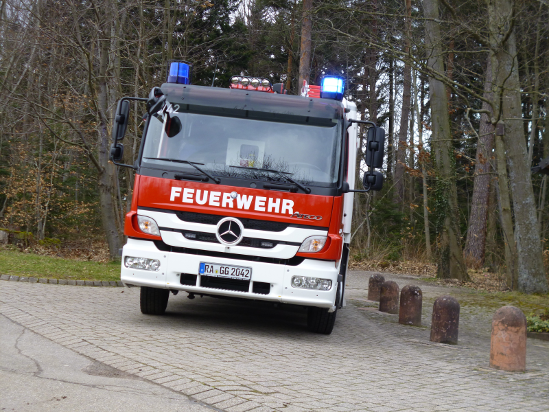

|  |
Fahrgestell: Mercedes-Benz Atego Fahrgestell 1326 F
Motor: 6 Zylinder mit 256 PS
Getriebe: Automatik
Gewicht: 12 Tonnen
Besatzung: 9 Mann
Löschmittel: Wassertank 1600 Liter Fassungsvermögen
Pumpe: FPN 10-2000 Feuerlöschkreiselpumpe
Sondersignalanlage: 2x Hänsch RKL Nova Doppelblitzleuchten , integrierte Power LED Blitzleuchten an Fahrzeugheckonsole (Magirus/Hänsch), LED Sputnik Nano Frontblitzer, Martinhorn Druckluft
Aufbau/Beladung: Umfangreiche feuerwehrtechnische Beladung nach DIN, pneumatisch ausfahrbarer Lichtmast hinter der Fahrerkabine (schwenk/drehbar) mit Fernsteuerung und Xenon Licht von Teklite, Rückfahrkamera in Farbdisplay der HMI
Bedieneinheit in Fahrerkabine integriert, durchgehende LED Umfeldbeleuchtung (im Rückwärtsgang als Manövrierhilfe), Wassersauger, Stromaggregat |